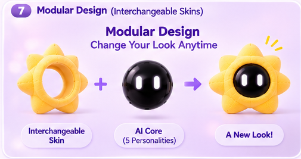

Supplied classroom concept visuals. The black electronic core is included in the complete set only; an extra skin contains no core.
Meet Dada.
A little companion, a bigger happiness.
Dada Complete Set
A little friend for big feelings and everyday things. The complete set includes one AI core, one chosen skin, a magnetic desktop base, charging cable and bag charm kit.
A little look inside +
AI emotional companionship, smart daily reminders, gentle motivation, and five distinct interaction personalities. Wake the whole device with “Hey, Dada!” or manage your day in the WeChat Mini Program.
Your Dada configuration +
Complete Set: 1 AI core with one chosen personality + 1 chosen skin + 1 magnetic desktop base + 1 charging cable + 1 bag charm kit. Extra Skin: one Cloud, Sun or Star replacement skin only, without the AI core or accessories. All variants within each product category share the same price.
Shipping information +
A little extra personality, outside.
Extra skins · each
Skin only. AI core and accessories are not included.

Switch your look.
Keep your companion.
The same electronic core fits Cloud, Sun and Star. An extra skin changes the shape and material, while your AI personality stays the same.
Pick an extra outfit ↗One Dada. So many ways to connect.
Personality changes the interaction. Skin changes the look and material.
Keep the same core and personality; change the outfit with extra skins. Your initial AI personality stays fixed after purchase.